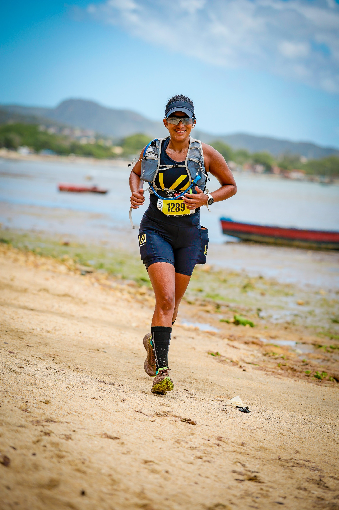
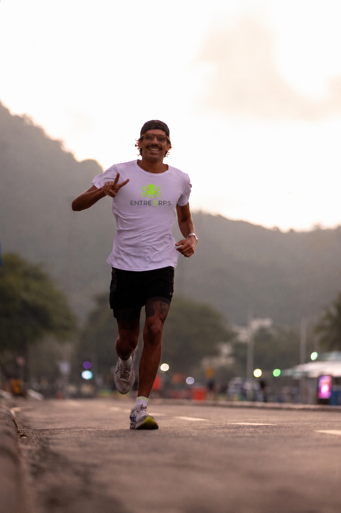

Ecossistema de alta performance para corredores de asfalto e trail. Treino, nutrição, fisioterapia, sono, recovery e mentalidade — lidos como um sistema só, não como especialistas que não se falam entre si.
O problema quase nunca é falta de esforço — é a falta de direção. E ela aparece de dois jeitos opostos.
Monta o próprio caminho sozinho, sem estrutura — e só busca acompanhamento profissional depois que já se machucou.
Já tem vários profissionais — mas eles não conversam entre si. O plano do nutricionista não considera a estratégia do treinador. Cada um manda numa direção, e ninguém responde pelo todo.
O inimigo nunca é o seu treinador, seu nutricionista ou sua assessoria. Eles fazem parte da solução. O inimigo é o hype — a forma como as redes normalizam treinar lesionado, escondem o treino leve que constrói a base, e vendem comparação em vez de método.
É um hub de especialistas que envolve fortalecimento, nutrição, fisioterapia preventiva, saúde do sono, recovery — além de comunidade ativa, eventos e acompanhamento estratégico. Pensado por quem corre de verdade, para quem leva performance a sério. O treino entra como mais um componente do ecossistema — não como o produto principal.
Quatro pilares que se conversam — cada um reúne as frentes que sustentam ele.
O que sustenta a prática no dia a dia: treino, nutrição, fisioterapia, sono e recuperação. Sem base física consistente, estratégia e mentalidade não têm onde se apoiar.
Prescrição via treinador parceiro. Curadoria de quem entende trail e asfalto de verdade, não fórmula genérica de planilha.
Protocolo real, pensado pra quem treina sério — não dieta genérica de emagrecimento.
Entra antes da lesão, não depois. Parte do planejamento — não socorro de última hora.
Qualidade de sono é performance negligenciada. Odontologia do sono como diferencial raro nesse mercado.
Equipe dedicada de bem-estar e recuperação — parte do plano, não luxo avulso.
Como você decide sob pressão, sob desconforto e sob cansaço muda o resultado — antes de qualquer plano técnico. Autoconhecimento aplicado, não teoria solta.
Como você decide sob pressão muda tudo. O Eneagrama personaliza o acompanhamento — nunca é um teste de personalidade genérico.
Planejamento, leitura de terreno e decisão em tempo real — o que resolve, de forma literal, o problema que mais aparece entre corredores: falta de direção, não falta de esforço.
Planejamento de percurso, leitura de terreno, decisão de acelerar, reduzir ou parar. A leitura de cenário que a maioria treina duro, mas nunca desenvolve.
O ecossistema em si: profissionais que se falam, comunidade ativa, o "entre" que dá nome à marca. Resolve o outro problema clássico — cada especialista puxando pra um lado, sem ninguém respondendo pelo todo.
Onde Corpo, Mente e Direção se encontram num plano só — sem cada profissional puxando pra um lado. Ver o Diagnóstico Estratégico de Performance ↓
Método exclusivo Entre RPs. Duas etapas — não é uma consulta rápida nem um formulário automático.
Sem pacote fechado, sem letra miúda. Você sai sabendo exatamente onde está e o que falta — a decisão de como preencher isso é sua.

Especialista em Liderança Estratégica, Eneagrama e Gestão de Pessoas — aplicados aqui à performance esportiva. Trail runner competitiva, categoria amadora (CBAT): já testou na pele o que é treinar lesionada, encarar um DNF e voltar mais forte — não fala de resiliência por teoria.
É responsável pela leitura estratégica dos atletas do Entre RPs — a mesma leitura de comportamento e tomada de decisão sob pressão que aplica há anos como mentora de empresários e líderes. O método é dela; o Diagnóstico Estratégico de Performance é conduzido pela equipe do Entre RPs.
Também é criadora do O Líder Real, seu método próprio de mentoria estratégica. O Diagnóstico do Entre RPs nasce do mesmo raciocínio: ler a pessoa antes de prescrever qualquer plano.

Começou a correr do jeito que muita gente começa: sem nenhum critério técnico, com o primeiro tênis comprado sem orientação nenhuma. Rodou várias provas assim — até decidir investir de verdade, e sentir a diferença na pele.
Foi correndo que esbarrou no problema que o Entre RPs existe pra resolver: mesmo dentro de uma assessoria grande, com fisioterapia inclusa no convênio, ninguém indicou o profissional certo quando ele se machucou. Encontrou por indicação informal de um amigo — por acaso, não por sistema. É prova viva do gap entre profissionais que não conversam entre si.
Hoje cuida da operação e do relacionamento do Entre RPs — o elo entre quem constrói o ecossistema e quem vive a rotina real de treino.
Não tem fórmula de qualificação automática. O Diagnóstico segue o método Entre RPs.